2016/0729FriTLC
おはようございます
こんにちは
こんばんは
寺田蘭世です
宜しくお願い致します！
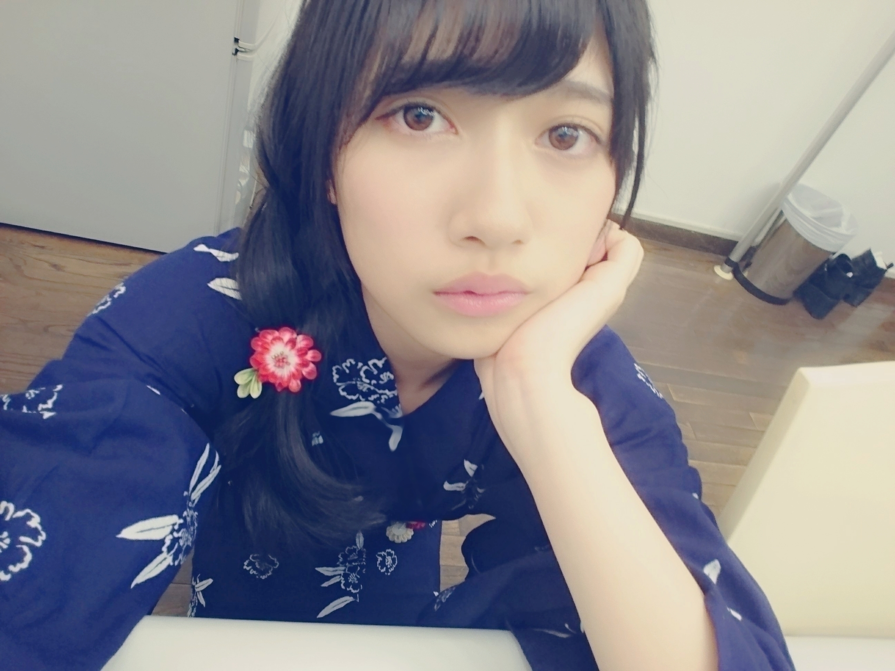
生写真の浴衣
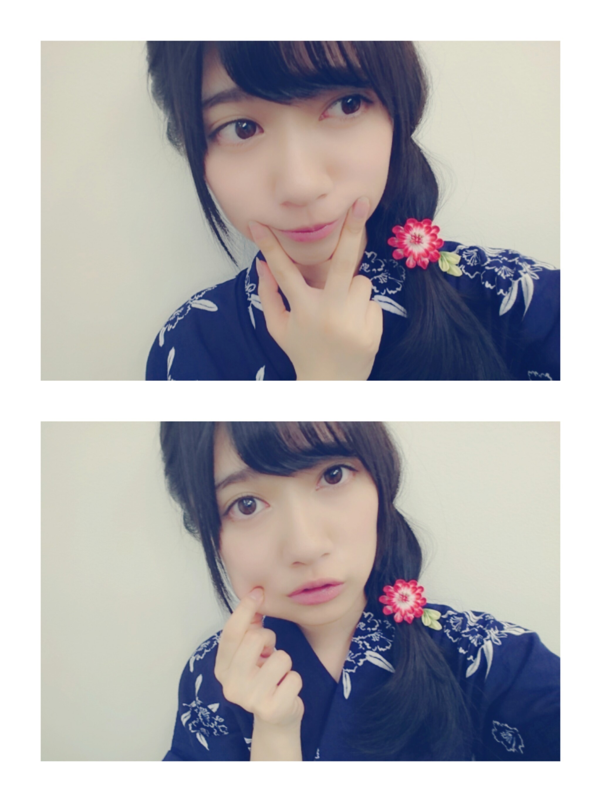
『お知らせ』
7/15
AKB新聞 さん
ヤングガンガン さん
7/23
UTB Vol. 245 さん
飛鳥さんとペアグラビアで
出させて頂いてます
凄く楽しい撮影でした
良き経験でした！
オフショットいつか載せます（´-`）
今回ポスターにもなってます
乃木坂46ファンの皆様
宜しくお願い致します（´-`）
7/23
B.L.T. さん
全メンバー載っています
有りがたいですね
浴衣での撮影でした。
もっとこの夏は浴衣を着た撮影をしたい（´-`）
7/29
BOMB別冊
若月さんと琴子とテラダの
3人インタビューで
出させて頂いてます
若様軍団が結成か？！！
先輩とのインタビューは
色んなお話が聞けるので
楽しいです（´-`）
8/1
ビッグコミックスピリッツ さん
さゆりんご軍団での
撮影でした！
表紙もやらせて頂いております
緩く緩く活動で行くつもりだったさゆりんご軍団が
何か凄いことに、、、
宜しくお願い致しますm(._.)m
8/6
Top Yell さん
絢音と2人でインタビューしました
今の気持ちそのまま言ったので見て欲しいです！
もっと頑張る！
『動画』
7/28 11:15～11:30
ラーメンウォーカー さん
最後の一滴まで味わいたい 贅沢ふぐ尽くしラーメン ！銀座「ふぐだし潮 八代目けいすけ」
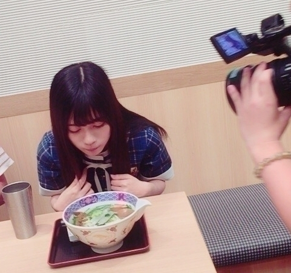
あ、
間違えて告知できなかった、、、
日付間違えてた
こう言うところ
なんで私って、、、m(._.)m
ドジって怖いです
すみません
『イベント』
乃木坂46 アンダーライブ全国ツアー2016 ～中国シリーズ～
日時・会場
＜広島＞
2016年9月22日(木・祝)
開場 17：30 開演 18：30
広島文化学園HBGホール
＜岡山＞
2016年9月23日(金)
開場 17：30 開演 18：30
倉敷市民会館
＜山口＞
2016年9月24日(土)
開場 14：00 開演 15：00
周南市文化会館
※開演時間は異なる場合が御座います。予めご了承下さい
9月23日にLIVEがあります
私のお誕生日です
だから何だって方もいると思いますが
お誕生日と言う誰にとっても年に1回の特別な日の
アンダーライブ
絶対いい物にしたいし
私が研究生時代
悩んでいた時
希望の光をくれたのは
アンダーライブでした。
今、
この日
9月23日のアンダーライブは私のきっかけにしたいです。
『CD』
7月27日
乃木坂46 15thシングル
裸足でsummer発売中です！
宜しくお願い致します！
『コラム』
ニッカンスポーツ・コム「NEWSがとまらんぜ」
7月も宜しくお願い致しますm(._.)m
っと言いましても
もう終わってしまう
7月もあっという間でした
7月30日も頑張りましょう♪
夏と言ったら
浴衣
西瓜
花火=線香花火
線香花火が一番好きです
昔から派手な手持ち花火は
怖くて
線香花火の方が落ち着くし
なんとも言えない
儚さとかが昔から好きです。
線香花火したいな
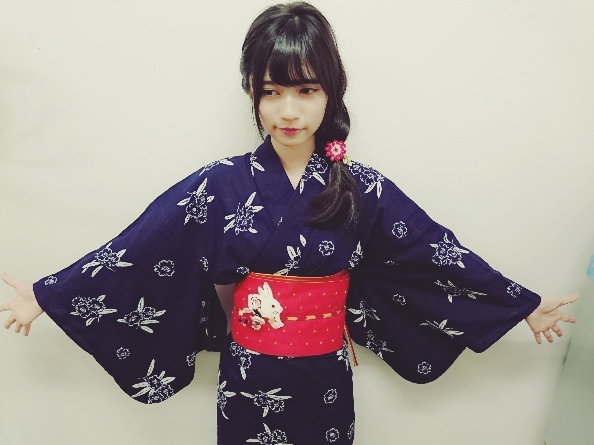
暑いけど
負けないぞっ！
地球温暖化になんて
負けないぞっ！
皆で地球を守るぞっ！
未来を変えるぞっ！
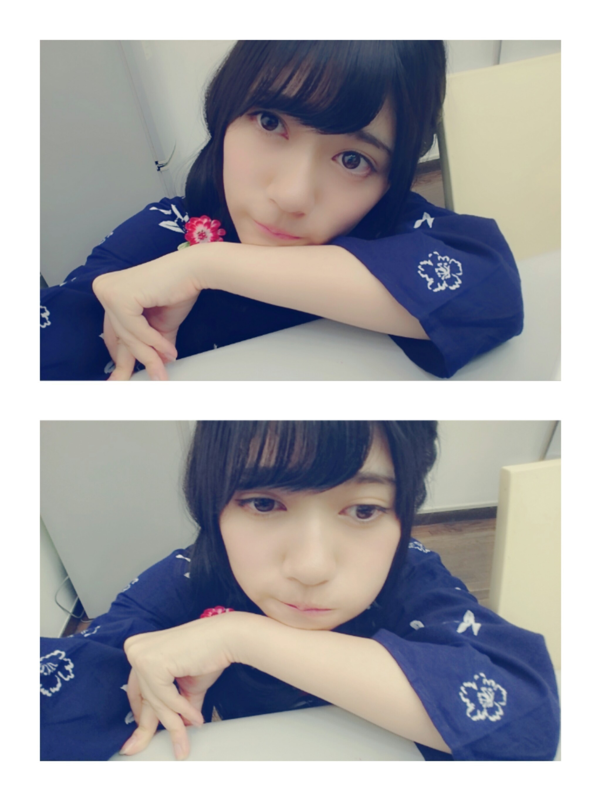
おやすみなさい♪
2016/0725Mon紅ゆずる様
トップ就任
おめでとうございます！
だいぶ遅くなりましたが
発表されたときは
おぉおーーってなりました！
改めて、おめでとうございます
絶対、観に行きたい！
そして「ドンジュアン」
内容が凄く好みです
宝塚〜
宝塚〜
そしてそして
私のご贔屓
朝美絢さん
珠城さんのトップお披露目公演
主な配役に、、、
ランスロット
朝美絢 （さん）
の文字も見た時は
泣きそうくらい
嬉しかったです！！
飛び上がった
その後一時間くらい
私の心臓は
ドキドキ
高鳴っておりました！
おはようございます
こんにちは
こんばんは
らんぜの勢いとま
らんぜーーーーー！
寺田蘭世です
宜しくお願い致します！
久々に宝塚トークさせて下さい、、、m(._.)m
カチャ様の専科移動。
ご退団されないのは
大変、嬉しいことですが
89期生で専科って考えると
月日の流れを感じました。
でも、専科って
それぞれの組に新しい色を毎回添えて下さる
毎公演新たなものが見える
ってイメージが私の中の専科さんです！
安定感があるのに
新しい物を作れるって
凄い事ですよね
普通新しい物に
人間は注目するのに、、、
そういったところも
宝塚の魅力であり
本当にお勉強になります。
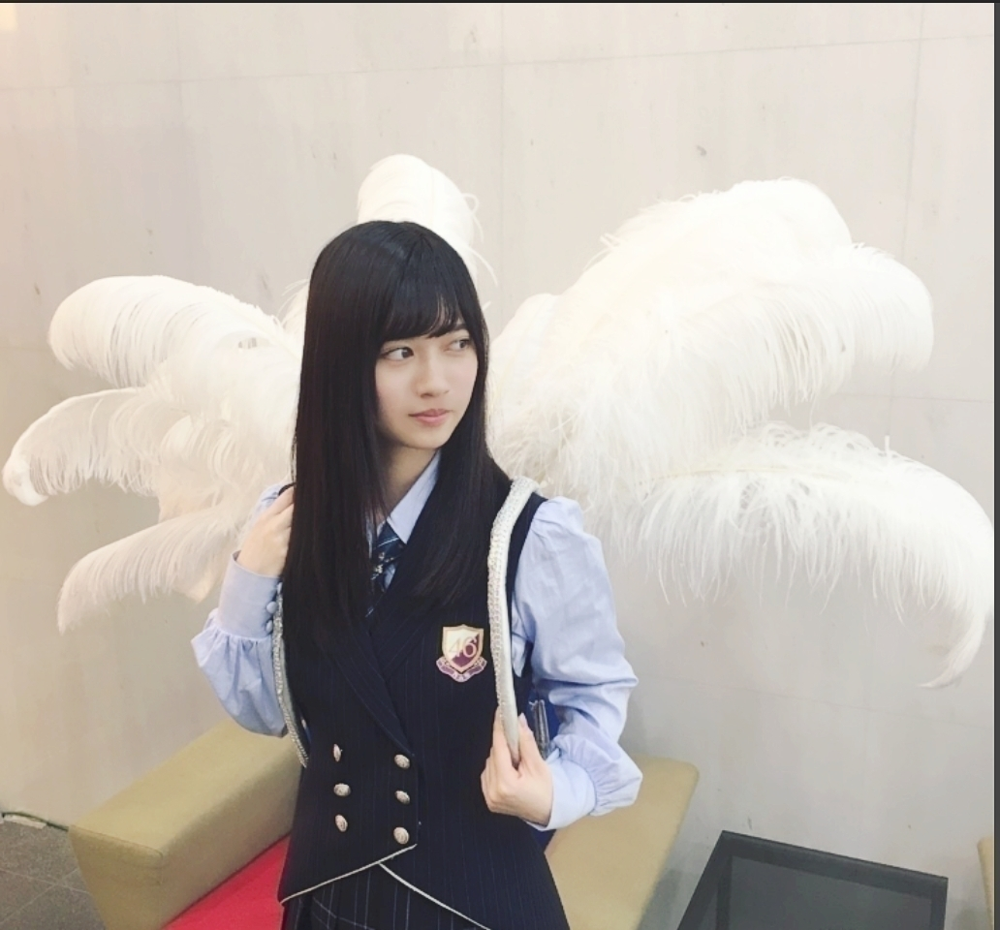
最近、宝塚観劇行けてないm(._.)m
行きたいな
そろそろ行かないと
栄養不足になりそうです
新たな刺激が欲しい
宝塚を観劇する度
刺激になるし
夢見える
おこがましいけど
私も頑張ろうってモチベーションに繋がります！
舞台観に行きたいな
夏休みがあるとしたら
宝塚三昧にしたいです
できるかなm(._.)m
できたらいいな
『真夏の全国ツアーin大阪』
宝塚トークから
LIVEのお話！
宝塚は兵庫なので
大阪から近いですね！
私は去年の夏休み
一人で大阪駅から梅田駅まで歩き阪急線に乗り
宝塚まで行きました！
そして、46時間TVでも
お邪魔した大阪！
大阪本当に大好きです！
セットリストやお衣装についてはまだ書けないので感想は全公演終えてからになってしまうのですが
毎公演
今の気持ち
新たな気持ち
今までの気持ち
いい方向に
ちゃんと1曲1曲感情を込めて踊って歌いたいです
それぞれの楽しみ方で
同じ時間を共有しましょう！
後ろの方の席とか
関係ないですよ
ちなみに、私視力は凄くいい方なので
赤白のサイリューム
推しタオル
うちわ
見えると思います
見えたら手をふるので
宜しくお願い致します！
そして、やっぱり
れいかさんが居ないと
物足りませんでした。
寂しすぎて
ご連絡してしまった。
そして、実は本番前
東京方面にパワー送りました、、、
私の弱々しいパワーでは
ありますが
1日でも早く元気になりますように！
れいかさんLOVEっ！
いつもよりは短いブログですがたまには良きかな
っと言っても
平均より長いブログ
もっとスパッと短いブログも書いてみよう！
おやすみなさい
良い夢を、、、
お風呂前ほぼ
スッピンですがm(._.)m
ショートカットにしたら
こんな感じなのかな
最近、髪を伸ばすのか
もう少し切るのか
よく悩みます
こんなにバッサリは
今のところ切る予定はありません。
でも、いつか何かあったら
切りたいかな
でも、伊織ちゃんに
伸ばせと言われたので
伸ばそうかな
最後まで
読んで下さりまして
誠にありがとうございます
また、お会いしましょうm(._.)m
2016/0717Sunなにをみてるの
アニメ「坂本ですが？」
最終回までスタイリッシュで最高に面白かったです。
こういうアニメ大好き
今度はどんなアニメを見ようかなって考えるとワクワクします
最近、うーんって考えてばかりでしたが
アニメ見てる時だけは
ちょっと気持ちが楽になります(^^)
アニメって偉大だ
私ももっと1人でも多くの人に笑顔になってもらいたいを、モットーに頑張ろってアニメをみてて思いました再確認(^^)
そう言えば
・ももくり
・ReLIFE
・初恋モンスター
を観ました
どれも次が楽しみ！
楽しみ過ぎる！！！
アニメ好きの方がいたら
これが自分の好きなアニメなんだーって教えて下さい
もっと色んなジャンルのアニメも学びたい
おはようございます
こんにちは
こんばんは
らんぜの勢いとま
らんぜーーーーー！
寺田蘭世です
宜しくお願い致します
このキャッチフレーズ
自己紹介する機会も
減ったので最近やってないのですが
忘れないで下さいね
握手会でたまにふってくれる方が居るのですが
一緒にキャッチフレーズやってくれると嬉しいです（´-`）
話題に悩んでいる方
良かったら、どうぞ
『アルバム個別握手会in横浜』
太陽ノックデニムver
首元にご注目
川後さんのをお借りしました。
嫉妬の権利 紫ver
ポピパッパパー
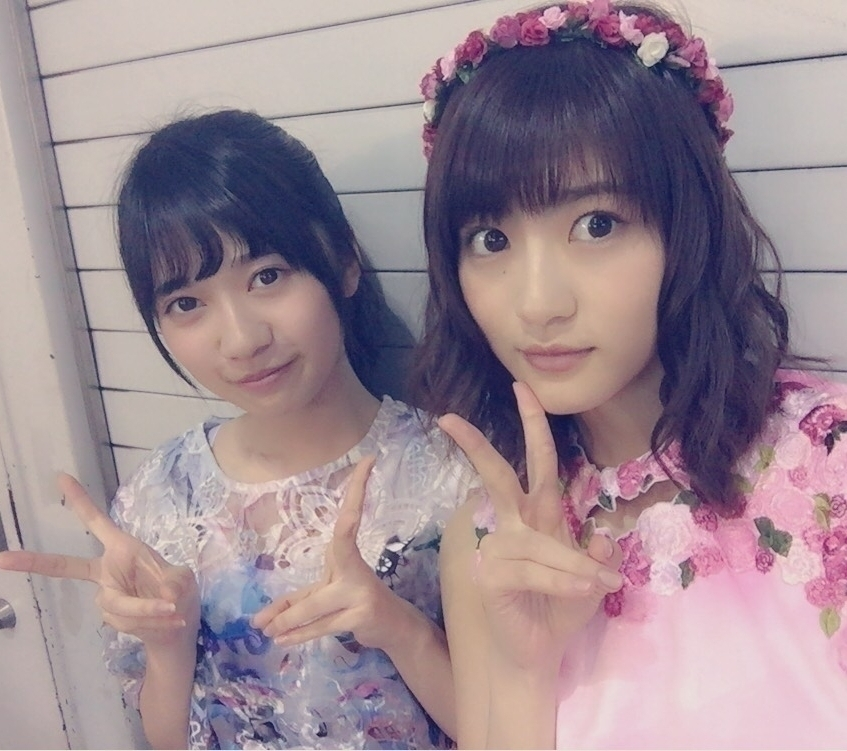
ハルジオンが咲く頃
命は美しい
を着ました！
お衣装での握手会は
とても楽しかったです！
また、いつかアルバム個別握手会をやるとしたら
そのときが楽しみです！
心から
ありがとうございました！
そして、先日の事
頭の上に蜂が止まりました。
その他にも色々と
運が悪いのかここ最近は
捻挫した方の足
癖でまた捻挫しやすくなっているのに
（ちなみに、左足なのですが）
やたら左足だけ
道の溝にストンとハマって落ちたり
小石を踏んで
転けそうになったり
私、そんなに
悪い事したかなとか
考えつつ凹むのですm(._.)m
きっと今はそう言う時期なんだろうなって飲み込んでます。
人生は冷静に振り返った時
トータルで
平等になるように
いい時期と悪い時期がある
私はそれを信じるタイプの人間です。
だから多分
秋冬
凄くいい事があると
信じ生きていきますm(._.)m
それと、東京喰種でも
何か言ってた気がしますが
カネキくんが白カネキくんになる寸前で神代利世さんが何か言ってた気が、、、
何だったっけ
「当人の実力不足」
この言葉を聞いてから
本当、運とか運命ってあると思うんです
でも、最低の中の最高を得るには自分が備えておかなきゃいけないなって
だから、この言葉を知ってから運任せにはし過ぎないって決めました。
やっぱり、アニメ
再びアニメの話に戻ってきてるアニメって名言が沢山あるから好きですm(._.)m
15枚目シングルについては
また、MVが解禁されてから感想とか詳しく書きますね。
『お知らせ』
7/15 ヤングガンガン さん
AKB新聞 さん
7/23 UTB Vol. 245 さん
幻の１曲を初公開！！
さゆりんご軍団の
「さゆりんごが咲く頃」！！
『HappyBirthday』
北野氏
お誕生日おめでとう
直接メールしました
だから、ここでは短めに、、、m(._.)m
皆さんの前だと
恥ずかしいからね
今シングルは
前回みたいに
一緒に活動できないけど
また、お互い
もっといい場所で
目指している場所に向かって頑張ろうね。
『おまけ』
最後はヤングガンガンさんのオフショットにて
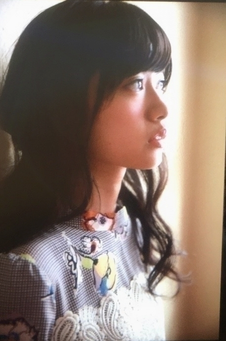 ちなみに、次回号は
付録のICステッカーテラダverがあります
大変、ありがたいですm(._.)m
ヤングガンガンさんの
撮影凄く楽しかった
メイクとかお衣装とか
撮影の雰囲気とか
全部全部楽しかった
今回再び未公開カットを
出させて頂けて
嬉しい限りです。
宜しくお願い致しますm(._.)m
2016/0707Thu浴衣着たい！
SamuraiELOさん
オフショットをたくさん載せる
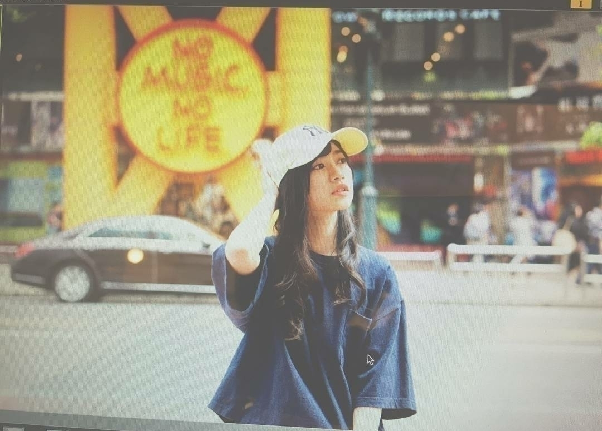
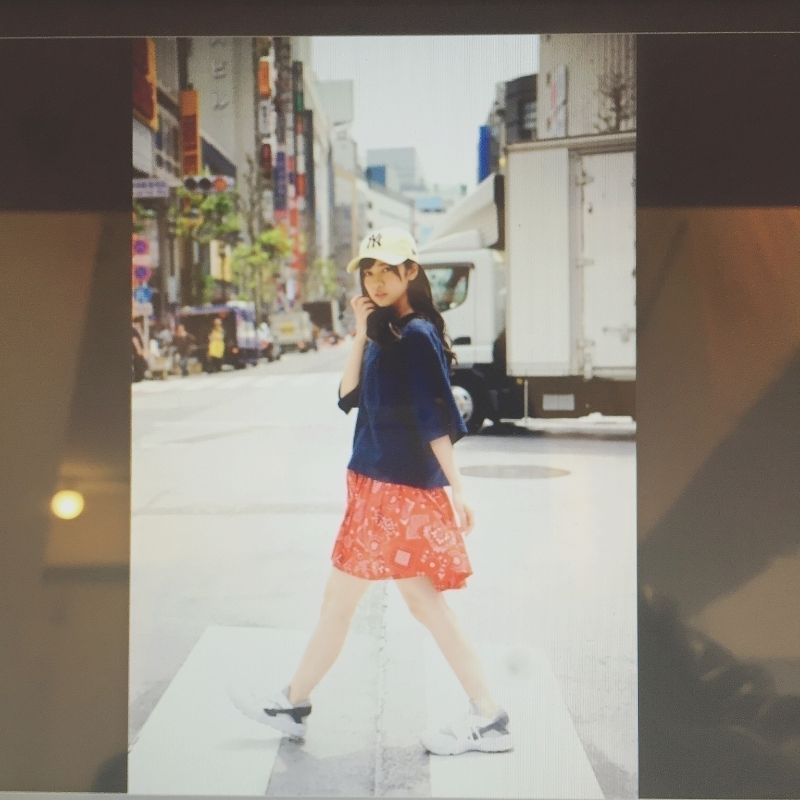
こう言うカジュアルなの
撮影では初めてでした
割といつもピンクとか
フリル系なイメージなものが多いイメージですが
でも、昔から古着好きの私としてはTシャツの素材感とかもすごく好みなお洋服でしたサラッと着れるのに
お洒落さんにみえるって
最高だよね(^^)
帽子も似た色と形の物を
私物で持っているのですが
帽子をこの夏は
集めたいなーって思いました！
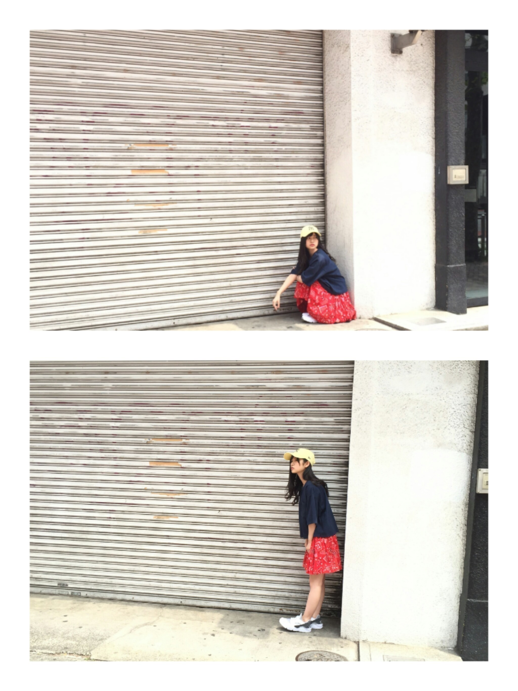
《雑誌発売日》
《6月》
6月9日UTB＋ さん
6月18日OVERTURE さん
6月29日別冊カドカワ さん
6月30日月刊エンタメ さん
《7月》
7月23日UTB さん
オフショットとか載せていきます
やっぱり
撮影は楽しいです！
七五三のドレスとかお着物とかの撮影好きだったもんな、、、m(._.)m
昔から
何も変わらないな自分
ニッカンスポーツ・コム「NEWSがとまらんぜ」寺田蘭世
毎週金曜日配信
寺田蘭世が乃木坂46内や芸能界のニュースを貪欲にキャッチし、らんぜの独特な感覚でどんどん発信していきます！
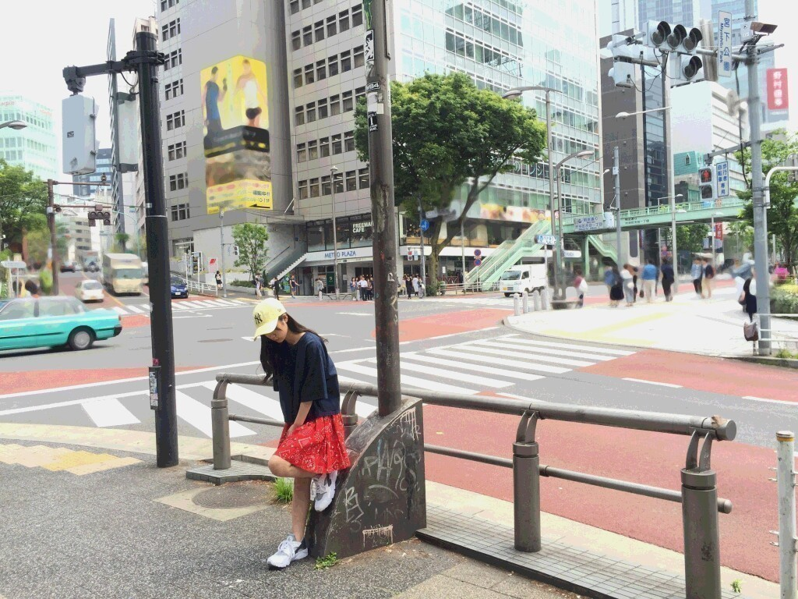
最後までsamuraiELOさんのオフショットでいく！
かりんちゃんが2ヶ月
早めのお誕生日プレゼントくれたm(._.)m
ディズニーキャラクター
美女と野獣のポット夫人とチップのbagをプレゼントしてくれました
私の大好きなキャラクター達です！！！
すごく嬉しい
ありがとうありがとう
大切に使いますm(._.)m
2016/07/07 19:48｜個別ページ｜コメント(1012)